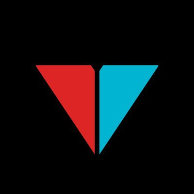

MY HTML 201 |
||
|---|---|---|
|  |
Viva La Dirt League (VLDL) are a New Zealand group of professional sketch comedy YouTubers.[2] The founding members are Rowan Bettjeman, Alan Morrison and Adam King, but their productions have featured other regular cast members such as Byron Coll, Hamish Parkinson, David Correos, Britt Scott Clark, Ben Van Lier, Ellie Harwood, and Robert Hartley. |
|
©YOUTUBE |
||